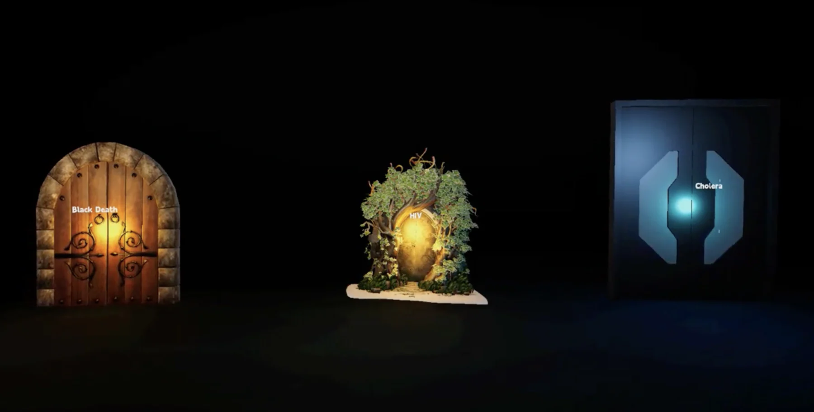
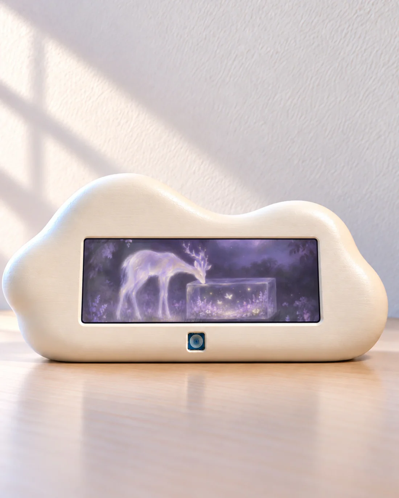

Project 03 / Speculative VR experience
Disease Museum
What will you leave for the next generation?
Disease Museum is a speculative VR experience across the Black Death, HIV/AIDS and a fictional future illness, CAS. Three imagined generations face three different diseases. Each crisis choice becomes a Family Rule and leaves an object the next generation inherits. A disease may disappear, but the choices and behaviors created by it can continue across generations.
- Format
- VR experience
- Tools
- Unity · VR
- Eras
- Black Death · HIV/AIDS · Future CAS
- Theme
- Inherited choices

- Gen 01Black Death · Fear & Care
- Gen 02HIV/AIDS · Stigma & Solidarity
- Gen 03Future CAS · Agency & AI
Film2:28
